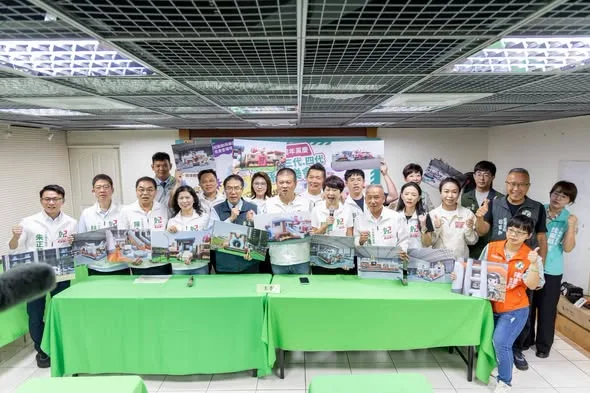
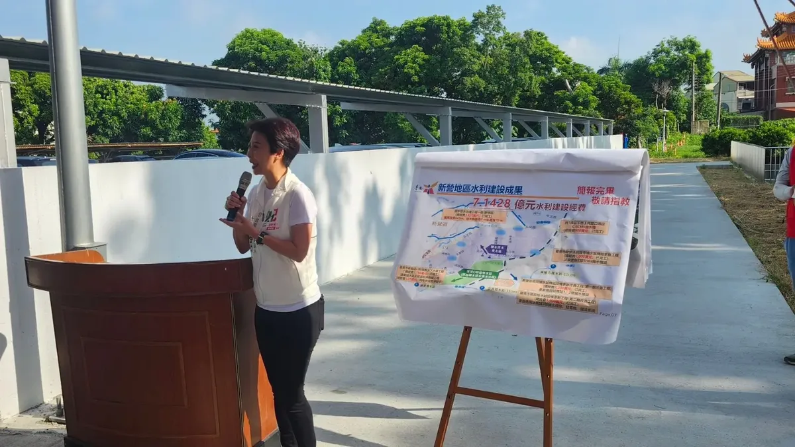
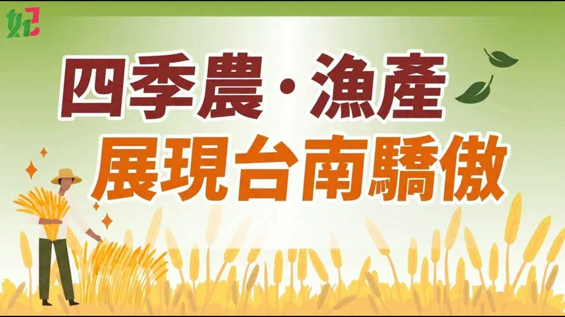
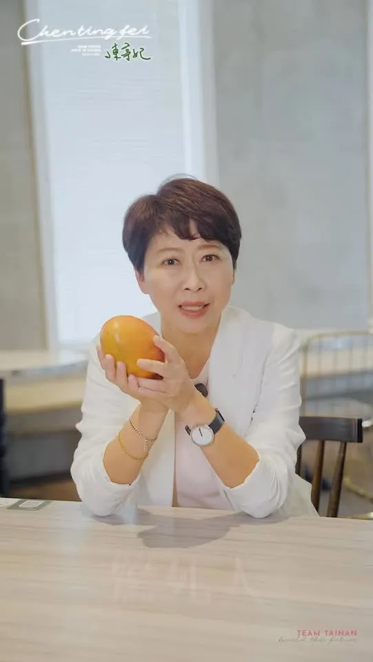

陳亭妃chen_tingfei

台南明（8/24）日再度停止上班、停止上課。 連日豪雨，台南多處積淹水，接下來仍可能有大雨、局部豪雨及短延時強降雨。 提醒大家，明天如果非必要請盡量避免外出，遠離積淹水及危險區域，也請大家做好防雨、防淹水準備。 目前最重要的，就是守護大家的安全，也一起努力讓受災的家園盡快恢復。 天雨路滑，大家平安最重要！ #陳亭妃 #台南
Accounts
| 平台 | 帳號 | 已收錄貼文 | 最後更新 |
|---|---|---|---|
| https://www.facebook.com/fififans/ | 68 | 2026-08-23 17:32 | |
| https://www.instagram.com/chen_tingfei/ | 55 | 2026-08-23 19:21 | |
| Threads | https://www.threads.com/@chen_tingfei | 41 | 2026-08-23 19:20 |
| YouTube | https://www.youtube.com/channel/UCWlv4Ixpdv0QjkdCL3yfGZw | 24 | 2026-08-21 22:23 |
| LINE 官方帳號 | https://page.line.me/nhu2565u | 0 | — |
Timeline
顯示 202 / 202 則
台南明（8/24）日再度停止上班、停止上課。 連日豪雨，台南多處積淹水，接下來仍可能有大雨、局部豪雨及短延時強降雨。 提醒大家，明天如果非必要請盡量避免外出，遠離積淹水及危險區域，也請大家做好防雨、防淹水準備。 目前最重要的，就是守護大家的安全，也一起努力讓受災的家園盡快恢復。 天雨路滑，大家平安最重要！ #陳亭妃 #台南

有關安南區海佃路二段空地爆炸情形，今天一早亭妃就幫忙安置地點安排、國軍協助整理家園、電力回覆等等緊急處理事項，明天國軍還會繼續協助家園整理。 目前檢調針對整個案件在調查當中，基於偵查不公開的原則，市長也允諾要協助代位求償，為了讓大家可以重建家園，會先幫忙緊急處理費。 另外社會局還有社會慰助金，亭妃也已經向行政院報告，因為這一次房子受損狀況非常嚴重，若有需要貸款重建，公股銀行應該給予低利幫忙，加快民眾恢復家園重建的速度。 #陳亭妃 #安南區 #火災 #災後重建

🌧️【豪雨來襲，安全第一】 明天8/23（日）因豪雨影響，臺南市政府宣布停班、停課一天。 提醒大家，明天非必要請儘量留在家中，避免前往山區、低窪及容易積淹水地區，也請隨時留意最新天氣與市府公告。 希望這場雨趕快過去，大家平平安安，台南加油！ #陳亭妃 #停班停課 #豪雨特報 #安全第一 #台南
台積電在南科，台南人都賺爆了！？ 我敢跟你說，絕對沒有！ 南科2024年產值正式超越竹科，台積電擴建三座2奈米廠，是世界最重要的供應鏈。 但南科旁邊的鄉鎮，5年來房價漲、生活費漲，本地薪水漲幅卻很有限。 為什麼？因為《財政收支劃分法》規定所得稅90%給中央、只有10%給地方，南科賺進2.97兆，台南實際拿到的稅少得可憐。這20年地方經濟結構早已翻天覆地，半導體、AI、綠能、生技都在地方，但錢卻都往中央流。 很多國家都在推動「賺GDP的城市分到合理稅收」的制度改革，我們的財政劃分也應該跟上時代。南科在地應該要有紅利基金，從相關稅收專款專用於教育、住宅、托育、長照。 一樣是那句老話，我們再努力拚拚看吧！ #南科 #台積電 #財政收支劃分法 #陳亭妃

選戰倒數100天，台南「妃熊幸福」！❤️ 民進黨40週年黨慶，市黨部主委 林志展 和亭妃準備了超好玩的「一代、二代、三代、四代祖孫同樂會」！ 🧸獨家「台南妃熊幸福」氣墊 🚂台南首發火車頭主題氣墊 🎈妃妃動動萌樂園 💃章魚體智能大哥哥帶大家一起動一動 🍿還有爆米花、雞蛋糕、豆花、冰淇淋、魯麵、烤大豬等美食！ 大人、小孩、阿公阿嬤，通通有得玩、有得吃、有得休息！ 📍9/5（六）安南區・樺谷夜市 📍9/6（日）新營區・南瀛綠都心 ⏰下午5點～晚上8點 我們不見不散！ #台南妃熊幸福 #一代二代三代四代祖孫同樂會 #民進黨40週年 #陳亭妃

桌球搖籃再升級！亭妃強勢爭取：國家級桌球訓練中心落腳台南，建構基層到國手「一條龍」培育模組！ 台南是台灣桌球的傳奇搖籃，培育出無數奧運英雄！亭妃過去深耕台南桌球長達28年，今天也在立法院針對國家體育政策強力質詢，為台南爭取設立「國家級桌球訓練中心」。 在少子化時代，傳統靠家長自費苦撐的菁英培訓模式已陷瓶頸，政府必須打造「社區俱樂部 ➡️ 基層訓練站 ➡️ 國手培訓」的一條龍完整機制，並同步調升多年未調整的基層教練費與運作補助。 對此，運動部次長黃啟煌也深表認同，大讚台南桌球底蘊深厚，當場允諾：只要台南市政府協調合適土地，運動部將全力研議推動！ 從基層扎根到國家級基地，亭妃要讓台南的成功經驗打造為全國體育示範模組，讓好選手留在台南、走向世界！ #陳亭妃 #行動派立委 #國家級桌球訓練中心 #台南桌球搖籃 #一條龍培育模組 #挺基層顧選手 #發展大台南

農漁民豐收卻賺嘸？陳亭妃提解方：打造「四季資訊＋災損快通報＋冷鏈物流」，讓農漁民收入更穩、青年安心返鄉接棒！

亭妃來到新營，見證「新營建業O幹線雨水下水道第一期」完工！ 面對極端氣候與短延時強降雨，治水不能只等雨來才應變，而是要提前做好準備，而且治水工程不能間斷。 新營建業O幹線雨水下水道第一期工程是由中央國土署補助5,168萬元，打造大型雨水箱涵，直接增加1,455立方公尺滯洪空間，並搭配抽水設備，讓雨水更快分流、降低既有排水系統壓力，未來亭妃會持續爭取第二期工程800m的箱涵再加上抽水站5億多元的經費，讓我們一起守護新營。 #陳亭妃 #台南 #治水不能等 #新營
@chen_tingfei:
勞工百工百業力挺，作伙挺亭妃！ 我也是勞工子弟，從小看著爸爸在東菜市賣水果、晚上到夜市賣棉被，一步一腳印走到今天。 所以我更知道，勞工要的不是漂亮的政治支票，而是政府真正聽得見、做得到。 如果有機會擔任市長，我要做大家的「勞工市長」！讓勞工政策不再大鍋菜，從訓練、福利到工作環境，一項一項改善，持續為大家打拚。 謝謝五大總工會、做工行善團，以及百工百業的夥伴相挺！ 讓我們作伙寫歷史，迎接台南400年來第一位女市長！ #陳亭妃 #勞工市長 #百工百業力挺

@chen_tingfei:台南明（8/24）日再度停止上班、停止上課。 連日豪雨，台南多處積淹水，接下來仍可能有大雨、局部豪雨及短延時強降雨。 提醒大家，明天如果非必要請盡量避免外出，遠離積淹水及危險區域，也請大家做好防雨、防淹水準備。 目前最重要的，就是守護大家的安全，也一起努力讓受災的家園盡快恢復。 天雨路滑，大家平安最重要！ #陳亭妃 #台南

@chen_tingfei:🌧️【豪雨來襲，安全第一】 明天8/23（日）因豪雨影響，臺南市政府宣布停班、停課一天。 提醒大家，明天非必要請儘量留在家中，避免前往山區、低窪及容易積淹水地區，也請隨時留意最新天氣與市府公告。 希望這場雨趕快過去，大家平平安安，台南加油！ #陳亭妃 #停班停課 #豪雨特報 #安全第一 #台南

【無人載具採購】混淆特別條例與產發條例？陳亭妃怒批在野：根本違憲又倒退嚕！
妃妃的第二款LINE貼圖正式上架啦！ 從第一款貼圖到現在，謝謝大家一路陪著妃妃、支持妃妃。 今天是選戰倒數99天，我想把這份心意分享給大家，我們要繼續長長久久，作伙向前行！ 聊天不知道要說什麼？就讓動態「妃妃」幫你說！ 日常問候、加油打氣、開心撒嬌，通通交給妃妃動態貼圖，讓妃妃陪你在每一天！ #留言有妃妃LINE貼圖下載網址 #陳亭妃
妃常幸福，因為有你相伴 ❤️ 情人節快樂！ 願我們珍惜身邊每一份愛，把幸福留在台南的每個角落。 #陳亭妃 #妃常幸福 #情人節快樂
有一次過年，我在市場上，發著我的一元生肖紅包。 現場很多阿伯阿姨排隊， 但有一個小妹妹站在旁邊看了很久，卻沒有過來。 我走過去:「妹妹 · 新年恭喜」。 她小聲說:「我不是台南人。」 我:「沒關係啊 · 你今天在台南 · 就是台南人。」 她愣了一下，慢慢把手伸出來。 我以後當市長最想做的一件事， 不管你是台南人、 或是今天你剛到台南， 只要你在這塊土地上， 你就是我們要關心的每個人。 沒有例外。
我團隊裡有很多資深志工。 從我不知道哪一年開始，就穿著我們的背心， 出現在每一場活動，默默付出。 10 年前，台南有幾百戶淹水， 我們一戶一戶跑、一戶一戶清淤。 那個年代很多人受過苦。 後來我問過志工們:「你們不累嗎?」 他們只有跟我說一句話: 「不要忘了，妳也幫過我啊」。 想一想，這就是人的溫暖， 慢慢累積變成20 年後的一整支志工團隊。 政治， 是一個承諾。 是一個相信。 今天送出去的不是物資，而是用心與關懷。

@chen_tingfei:亭妃來到新營，見證「新營建業O幹線雨水下水道第一期」完工！ 面對極端氣候與短延時強降雨，治水不能只等雨來才應變，而是要提前做好準備，而且治水工程不能間斷。 新營建業O幹線雨水下水道第一期工程是由中央國土署補助5,168萬元，打造大型雨水箱涵，直接增加1,455立方公尺滯洪空間，並搭配抽水設備，讓雨水更快分流、降低既有排水系統壓力，未來亭妃會持續爭取第二期工程800m的箱涵再加上抽水站5億多元的經費，讓我們一起守護新營。 #陳亭妃 #台南 #治水不能等 #新營
台南仁德工業區豪雨受創！陳亭妃力爭認列災區 全力協助中小企業！
勞工百工百業力挺，作伙挺亭妃！ 我也是勞工子弟，從小看著爸爸在東菜市賣水果、晚上到夜市賣棉被，一步一腳印走到今天。 所以我更知道，勞工要的不是漂亮的政治支票，而是政府真正聽得見、做得到。 如果有機會擔任市長，我要做大家的「勞工市長」！讓勞工政策不再大鍋菜，從訓練、福利到工作環境，一項一項改善，持續為大家打拚。 謝謝五大總工會、做工行善團，以及百工百業的夥伴相挺！ 讓我們作伙寫歷史，迎接台南400年來第一位女市長！ #陳亭妃 #勞工市長 #百工百業力挺

對於海佃路爆炸事件的受災戶，目前最關鍵的除了市政府協助集體訴訟代位求償，另外就是需要中央政府協調公股銀行低利貸款協助家園重修經費。 我已向行政院積極爭取，以減輕受災戶的經濟負擔，加快家園重建的速度。 #陳亭妃 #海佃路爆炸 #災後重建 #台南

🌧️【豪雨來襲，安全第一】 明天8/23（日）因豪雨影響，臺南市政府宣布停班、停課一天。 提醒大家，明天非必要請儘量留在家中，避免前往山區、低窪及容易積淹水地區，也請隨時留意最新天氣與市府公告。 希望這場雨趕快過去，大家平平安安，台南加油！ #陳亭妃 #停班停課 #豪雨特報 #安全第一 #台南

我常常在戶外活動現場，在充氣滑梯陪著小朋友。 有一次，有一個小女生在滑梯上面猶豫了很久，不敢滑下來。 她媽媽在旁邊喊: 「妹妹，沒關係，妃妃姐姐會陪你!」 她小小聲說:「妃妃姐姐，我怕。」 我說:「沒關係，妃妃姐姐陪你，不要怕。」 她想了 3 秒，閉起眼睛，咚一聲滑下來。 我常常在想， 這是小孩的世界，那麼大人的世界呢？ 有時候還是需要有人陪你一起承擔恐懼。 「有我在，不要怕。」 這句話，我要學著對更多人說。

我第一次騎完這趟路的時候， 才知道，260公里不是一個數字。 是豔陽曬過的皮膚， 是逆風時咬著牙的每一步， 是騎到一半突然落下來的暴雨， 也是沿路一個又一個熟悉又陌生的聲音： 「亭妃，加油！」 端午連假三天， 我們騎過台南37個行政區， 用超過260公里的腳踏車程， 一塊一塊，把37區的民主集氣拼圖拼起來。 有人在路邊揮手， 有人停下來跟我們打氣， 有人只是遠遠地看著我們經過， 但我看見他們臉上肯定的微笑。 這趟路，從來不是我一個人的路。 是我們一起用汗水、雨水和腳步， 留下屬於台南、屬於人民的集體記憶。 謝謝這三天一路同行的每一位夥伴， 不怕熱、不怕風，也不怕突然來的大雨。 路還很長， 但只要大家作伙， 就沒有走不到的地方。 我會記得沿途每一個揮手、每一聲加油， 因為那都是我們一起走過的民主足跡。
很多人笑說「我們台南連空氣都是甜的」，連醬油膏吃起來都像焦糖瑪奇朵，哈哈！😂 台南人肥胖成長率全台第一，但這真的不能全怪我們，台南是台灣糖的老家，甜早就一代一代吃進基因裡了。而且台南美食有種魔力，叫「老闆永遠怕你餓」，點一碗虱目魚羹，老闆恨不得把整條魚都塞給你，在這種環境長大，多長一點肉，也算是對控肉的一種尊重吧（笑）。 但其實，既然美食躲不掉，那我們就把台南打造成一座更愛走路的城市，散步大道做得更好、環境更精緻好逛，讓大家願意多走、多散步。 #台南 #美食之都 #台南人 #陳亭妃

🌾四季農業・展現台南驕傲🌊 台南一年四季，都有屬於我們的好農產、好漁產！ 今天公布最新AI動畫政見，從資訊整合、智慧農業、產銷通路到農民保障，讓科技走進農村、市場走進產地，讓台南農漁產品不只「拚產量」，更要「拚價值」！ 現場也迎來兩位新夥伴—🌾農業妃妃泰迪熊、🌊漁業妃妃泰迪熊！ 未來還會有更多不同形象的妃妃泰迪熊，陪大家一起說出台南的故事。 讓台南成為一座有科技、有市場、有保障、有未來的農漁業科技城市！ #林志展 、萍易近人．台南市議員陳秋萍 、 周麗津#津認真、#蔡蘇秋金 、 @台南市議員蔡秋蘭 、 珍心為您·陳怡珍 、 #鄭佳欣 、 林依婷 Lin Yi-Ting 、#吳通龍、#陳碧玉、 #余柷青、 臺南市議員 李偉智 、#周嘉韋、#陳皇宇、#朱正軒 及候選人 #陳金鐘、#林建南、#沈震南 #陳亭妃 #四季農業 #展現台南驕傲 #妃妃泰迪熊 #台南

同一顆愛文芒果，在東京日本橋百貨公司放在絲綢雕花木盒裡，叫「太陽之子」，一顆賣上萬塊🥭 那你知道台南賣芒果的阿伯賣多少嗎？100塊不到！我們用大臉盆裝，切大塊，打開冰箱大口吃，但同樣的水果，在世界上卻是奢侈品。 這其實是「城市美學」的邏輯。台灣人種水果技術世界第一，很努力把東西種好，卻少了人願意花時間，去設計這顆芒果的故事、儀式感與品牌價值。 台南人的幸福，不能只是「因為在產地所以吃得便宜」，我們還要學著像對待藝術品一樣，對待自己的專業和產品，不只要懂吃，更要懂台南這座城市到底有多珍貴。 #台南 #愛文芒果 #城市品牌 #陳亭妃

AI紅利全民共享 @william_chingte 總統宣布，明年普發現金1萬元，在歲入歲出平衡、實質零舉債的前提下，讓經濟成長的果實全民共享。 AI帶動台灣經濟成長，這份成果不能只屬於科技產業，更要讓每一個努力生活的家庭都能感受到。 科技拚發展，生活也要顧好。 AI紅利，全民共享！ #陳亭妃 #AI紅利全民共享 #台南
@chen_tingfei:勞工百工百業力挺，作伙挺亭妃！ 我也是勞工子弟，從小看著爸爸在東菜市賣水果、晚上到夜市賣棉被，一步一腳印走到今天。 所以我更知道，勞工要的不是漂亮的政治支票，而是政府真正聽得見、做得到。 如果有機會擔任市長，我要做大家的「勞工市長」！讓勞工政策不再大鍋菜，從訓練、福利到工作環境，一項一項改善，持續為大家打拚。 謝謝五大總工會、做工行善團，以及百工百業的夥伴相挺！ 讓我們作伙寫歷史，迎接台南400年來第一位女市長！ #陳亭妃 #勞工市長 #百工百業力挺

✈️ 臺南國際航線再+1！臺南⇄河內10/25正式啟航！ 臺南的國際航線再傳好消息！ 10月25日起，越捷航空新增「臺南－河內」直飛航線，每週一、三、五、日共4班，未來從臺南出發，到越南旅遊更方便，也讓更多國際旅客有機會直接來到臺南。 期待航線開通後，讓臺南與河內的交流更加緊密，帶更多國際朋友來臺南走走、吃美食、看古蹟、感受府城文化！ 臺南，持續走向國際！ #臺南 #河內 #越捷航空 #國際航線 #陳亭妃